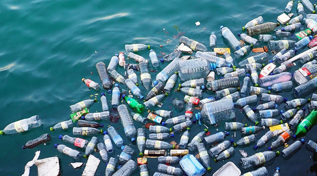
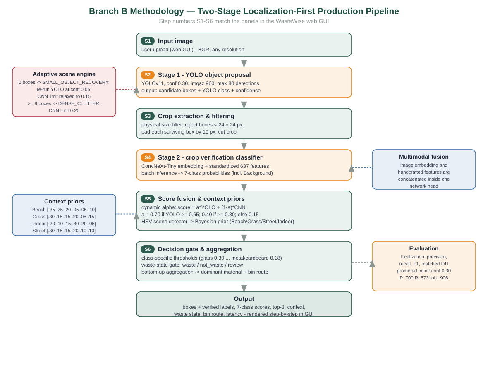

Upload image
A JPG, PNG, or WEBP photo of waste. Saved scans stay in browser history for review and hard-case collection.
Two-stage detection pipeline
YOLO26n finds every object, a ConvNeXt classifier verifies the material, and every number on this site survives a leakage-audited test set.

Upload a photo or pick a sample. The scan follows the exact pipeline order — localize, crop, verify, fuse, decide.
Methodology
Stage 1 finds objects — what YOLO is good at. Stage 2 verifies the material of each crop — what a dedicated classifier is good at — and filters false alarms.
A JPG, PNG, or WEBP photo of waste. Saved scans stay in browser history for review and hard-case collection.
YOLO26n proposes a box around every candidate object. 100-epoch retrain, later hard-negative fine-tuned for field small-object recall: 70.9% mAP50, 77.8% precision on clean validation.
Each kept box is cropped with 10 px padding; boxes smaller than 24×24 px are rejected before classification.
A ConvNeXt-Tiny + 637-handcrafted-feature classifier re-checks every crop across 7 classes, including a Background veto. Fine-tuned on the detector's own crops so training matches production.
Per-box score fuses detector and classifier confidences, then a scene-context prior adjusts the class scores.
Class thresholds and the waste-state gate pick the final decision. Uncertain detections route to review instead of a bin — conservative by design.

Audited results
The evaluation sets were audited with perceptual hashing; duplicated eval images were quarantined before these metrics were measured.
The merged classifier dataset ingests the same photos through different sources. Perceptual hashing found 2,406 leaked test images (43%) in an earlier EfficientNetB0 classifier's evaluation set, correcting its accuracy from an inflated 94.30% to an honest 91.77%. The same audit method, applied to the deployed ConvNeXt's dataset, found a smaller leak and is the basis for the 93.77% figure above.
The classifier is fine-tuned on the detector's own crops: accuracy on real detector output rose from 76.9% to 88.9% without losing clean-crop accuracy. When the API is offline the page says so instead of pretending.
Clean validation split. Tunable via confidence threshold.
Down slightly from 65.0% studio recall after a hard-negative fine-tune that traded it for +16 points of field small-object recall (see Limits).
Hard-negative mining checkpoint, promoted to the live localizer.
ExtraTrees on 637 handcrafted features per crop (8 spatial, 9 FFT, 44 color, 576 HOG). Kept for comparison and explainability evidence beside the deep pipeline.
Saved scans
Restore a saved scan to bring back the image, result, confidence, route, and boxes. History lives in your browser.
Honesty section
Fixed: the classifier was fine-tuned on the detector's own crops, lifting production-distribution accuracy from 76.9% to 88.9%. The detector was re-tuned for the field domain too: lowering the confidence threshold and hard-negative mining on new field data (PlastOPol) lifted held-out field small-object recall from 38.6% to 54.7%, at a small cost to studio mAP50 (72.1% → 70.9%). Open: on fully unseen capture sessions the detector still drops to 0.444 mAP50; the gap is narrowing with new data, not fully closed.
A 960px training run was evaluated: validation unchanged, unseen-batch recall up 3.9 points — not enough to chase. A later hard-negative mining fine-tune on new field data confirmed the real lever: small-object recall on that held-out domain rose 38.6% to 54.7% from new data alone, no resolution or architecture change. Small objects remain the main source of misses; training-data diversity is the binding constraint.
The waste / not-waste / review decision applies conservative rules on top of the verified material class; uncertain detections route to review instead of a bin.
Method note — metrics on this site come from the leakage-audited evaluation sets. The audit scripts, quarantine manifest, and reports live in the project repository.
See the evidenceFinal Year Project
A Final Year Project for automated waste understanding. A two-stage deep-learning pipeline detects and classifies waste in real photos, backed by a classical machine-learning branch for explainable evidence. Every headline metric survives a leakage-audited evaluation set.
The trained YOLO26n localizer and ConvNeXt classifier run behind a public API on Hugging Face Spaces.
khoaphung-wastewise-ai.hf.space ↗